Snakes of Democratic Republic of the Congo
198 snake species are recorded in Democratic Republic of the Congo in SnakeList: 71 venomous and 127 non-venomous, from 12 families.
- 198species
- 71venomous
- 127non-venomous
- 12families
Species
Showing 198 species
 African Banded SnakeChamaelycus fasciatus
African Banded SnakeChamaelycus fasciatus- No photo yetAfrican Bighead SnakeHypoptophis wilsonii
 African Bush ViperAtheris squamigera
African Bush ViperAtheris squamigera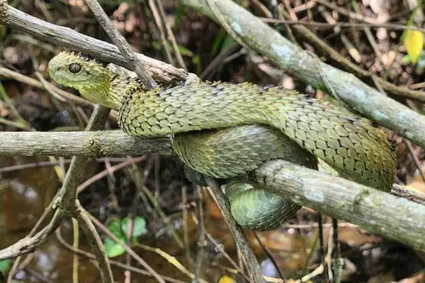
African Hairy Bush ViperAtheris hispida African Rock PythonPython sebae
African Rock PythonPython sebae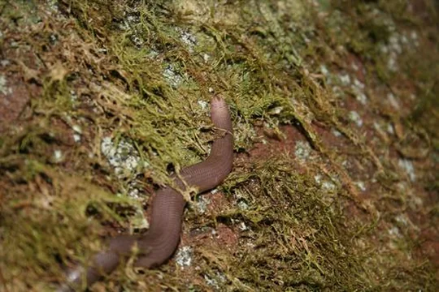
African Shovel-nosed SnakeScaphiophis albopunctatus- No photo yetAfrican Snake-eaterPolemon fulvicollis
 African Tree CobraPseudohaje goldii
African Tree CobraPseudohaje goldii Angola blind snakeAfrotyphlops angolensis
Angola blind snakeAfrotyphlops angolensis Angolan Garter SnakeElapsoidea semiannulata
Angolan Garter SnakeElapsoidea semiannulata Angolan Shovel-snoutProsymna ambigua
Angolan Shovel-snoutProsymna ambigua Ball PythonPython regius
Ball PythonPython regius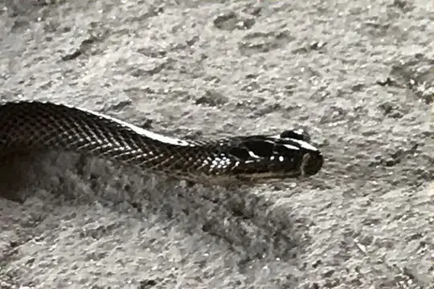
Bangweulu Water SnakeLimnophis bangweolicus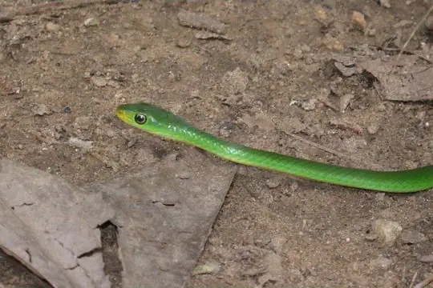
Battersby's Green SnakePhilothamnus battersbyi- No photo yetBattersby's Mole ViperAtractaspis battersbyi
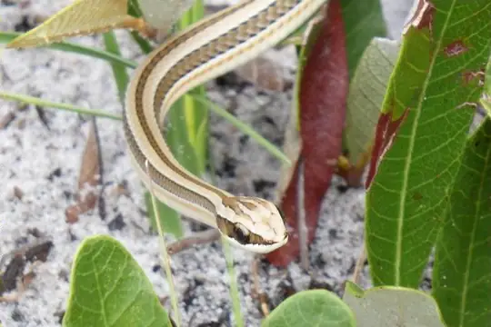
Beaked SkaapstekerKladirostratus acutus Bequaert's Green SnakePhilothamnus bequaerti
Bequaert's Green SnakePhilothamnus bequaerti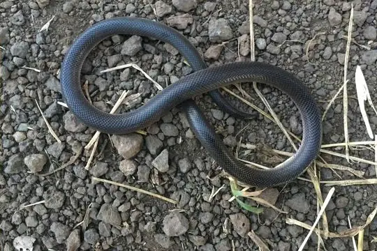
Bibron's Burrowing AspAtractaspis bibronii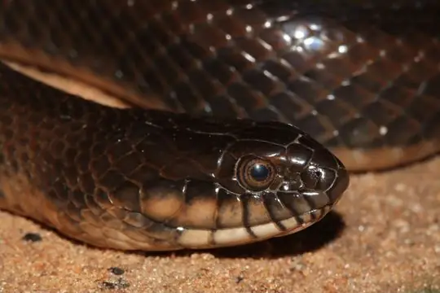
Bicolored Swamp SnakeLimnophis bicolor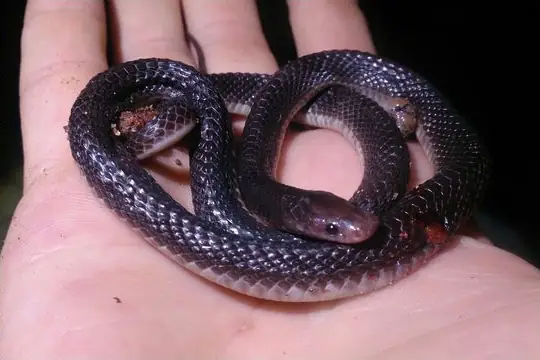
Black File SnakeGracililima nyassae Black MambaDendroaspis polylepis
Black MambaDendroaspis polylepis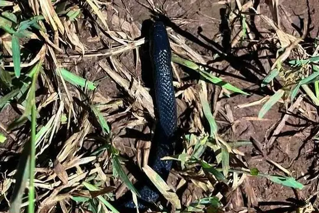
Black Snake-eaterPolemon ater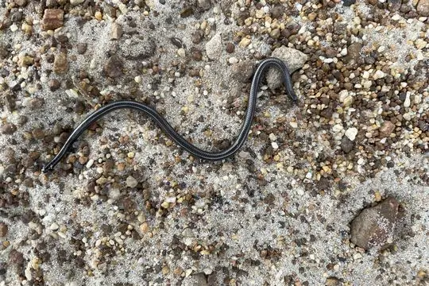
Black Thread SnakeLeptotyphlops nigricans Black-lined Green SnakeHapsidophrys lineatus
Black-lined Green SnakeHapsidophrys lineatus Black-necked Spitting CobraNaja nigricollis
Black-necked Spitting CobraNaja nigricollis Blackbelly SnakeHydraethiops melanogaster
Blackbelly SnakeHydraethiops melanogaster Blandings Tree SnakeToxicodryas blandingii
Blandings Tree SnakeToxicodryas blandingii Blotched Blind SnakeAfrotyphlops congestus
Blotched Blind SnakeAfrotyphlops congestus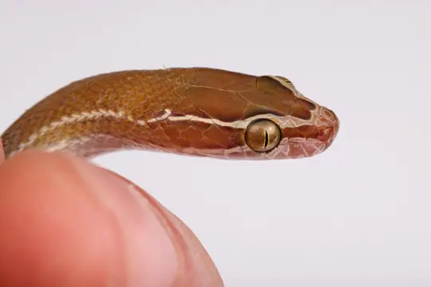
Bocage’s Brown House SnakeBoaedon bocagei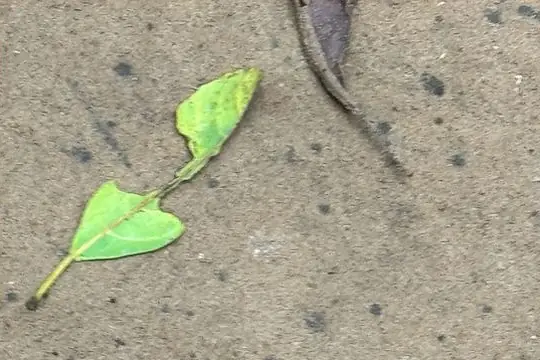
Bocourt's Snake-eaterPolemon bocourti BoomslangDispholidus typus
BoomslangDispholidus typus Boulenger's Mole ViperAtractaspis boulengeri
Boulenger's Mole ViperAtractaspis boulengeri Brahminy BlindsnakeIndotyphlops braminus
Brahminy BlindsnakeIndotyphlops braminus Brown Forest CobraNaja subfulva
Brown Forest CobraNaja subfulva Brown House Snake (fuliginosus)Boaedon fuliginosus
Brown House Snake (fuliginosus)Boaedon fuliginosus- No photo yetCaesar's African Water SnakeGrayia caesar
 Calabar Ground PythonCalabaria reinhardtii
Calabar Ground PythonCalabaria reinhardtii- No photo yetCameroon Rainforest SnakeDendrolycus elapoides
 Cameroon Snake-EaterPolemon notatus
Cameroon Snake-EaterPolemon notatus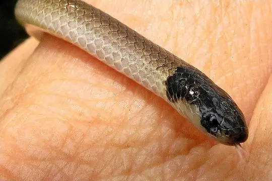
Cape Centipede EaterAparallactus capensis Cape Wolf Snake (capense)Lycophidion capense
Cape Wolf Snake (capense)Lycophidion capense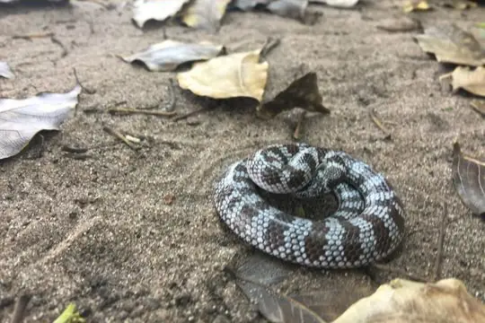
Cape Wolf Snake (multimaculatum)Lycophidion multimaculatum Central African Egg-eating SnakeDasypeltis fasciata
Central African Egg-eating SnakeDasypeltis fasciata- No photo yetChristy's Banded SnakeChamaelycus christyi
- No photo yetChristy's Water CobraNaja christyi
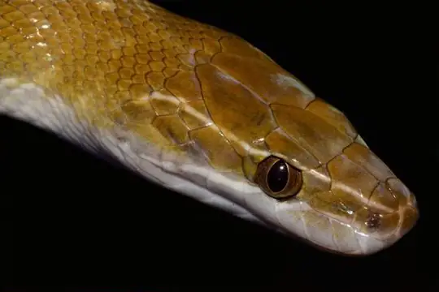
Coastal House Snake (littoralis)Boaedon littoralis Collared Snake-eaterPolemon collaris
Collared Snake-eaterPolemon collaris Common Egg EaterDasypeltis scabra
Common Egg EaterDasypeltis scabra Common File SnakeLimaformosa capensis
Common File SnakeLimaformosa capensis Common Night AdderCausus rhombeatus
Common Night AdderCausus rhombeatus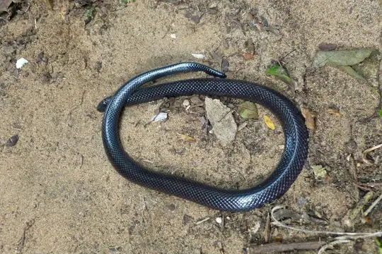
Common Purple-glossed SnakeAmblyodipsas polylepis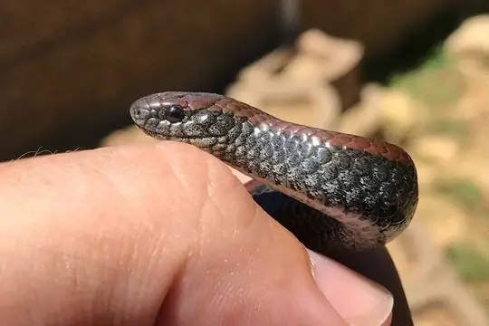
Common Slug EaterDuberria lutrix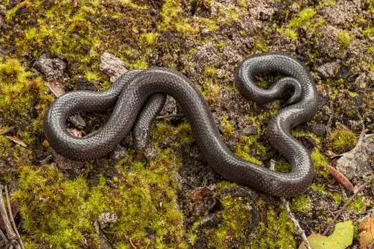
Congo Burrowing AspAtractaspis congica Congo File SnakeLimaformosa savorgnani
Congo File SnakeLimaformosa savorgnani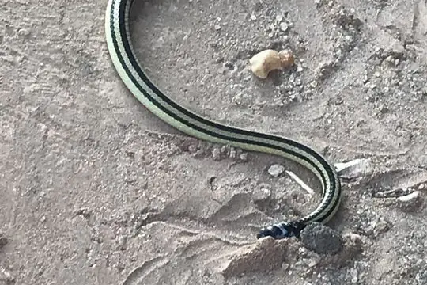
Congo Two-headed SnakeChilorhinophis gerardi Diamondback Night StalkerToxicodryas adamanteus
Diamondback Night StalkerToxicodryas adamanteus Dull Purple-glossed SnakeAmblyodipsas unicolor
Dull Purple-glossed SnakeAmblyodipsas unicolor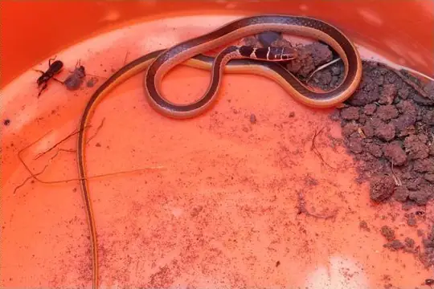
Dwarf Sand SnakePsammophis angolensis- No photo yetDwarf Water CobraNaja nana
- No photo yetEastern Congo White-bellied Water-SnakeBoaedon upembae
 Eastern Crowned Smooth SnakeMeizodon regularis
Eastern Crowned Smooth SnakeMeizodon regularis- No photo yetEastern Snake-eaterPolemon christyi
 Egyptian CobraNaja haje
Egyptian CobraNaja haje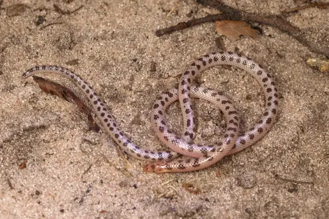
Elongate Quill-snouted SnakeXenocalamus mechowii Emerald Green SnakePhilothamnus heterodermus
Emerald Green SnakePhilothamnus heterodermus Emerald SnakeHapsidophrys smaragdinus
Emerald SnakeHapsidophrys smaragdinus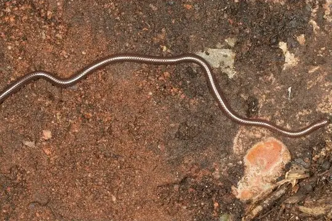
Emin Pasha's Worm SnakeLeptotyphlops emini Equatorial File SnakeMehelya poensis
Equatorial File SnakeMehelya poensis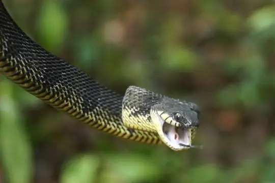
Fierce Night StalkerToxicodryas vexator Fischer's Cat SnakeToxicodryas pulverulenta
Fischer's Cat SnakeToxicodryas pulverulenta Flat Wolf SnakeLycophidion laterale
Flat Wolf SnakeLycophidion laterale Forest CobraNaja melanoleuca
Forest CobraNaja melanoleuca Forest Night AdderCausus lichtensteinii
Forest Night AdderCausus lichtensteinii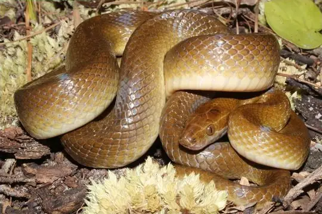
Frade’s Brown House SnakeBoaedon fradei- No photo yetGabon Beaked SnakeLetheobia caeca
- No photo yetGabon Snake-eaterPolemon gabonensis
 Gaboon ViperBitis gabonica
Gaboon ViperBitis gabonica- No photo yetGrauer’s Snake-eaterPolemon graueri
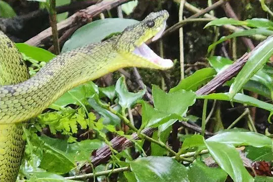
Great Lakes Bush ViperAtheris nitschei Green Bush SnakePhilothamnus nitidus
Green Bush SnakePhilothamnus nitidus Green Night AdderCausus resimus
Green Night AdderCausus resimus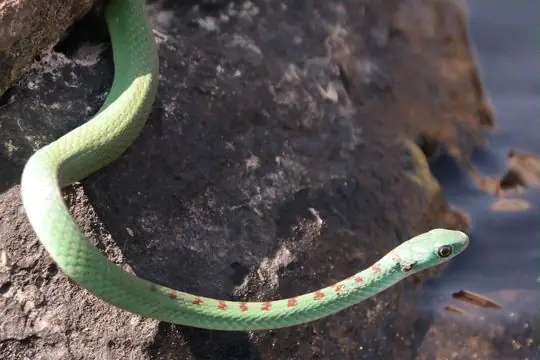
Green Water SnakePhilothamnus hoplogaster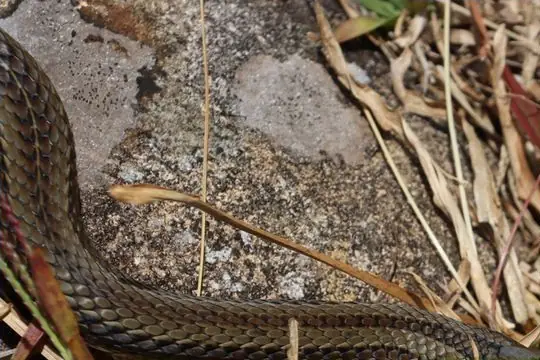
Grey-bellied Grass SnakePsammophylax variabilis- No photo yetGuiral's File SnakeLimaformosa guirali
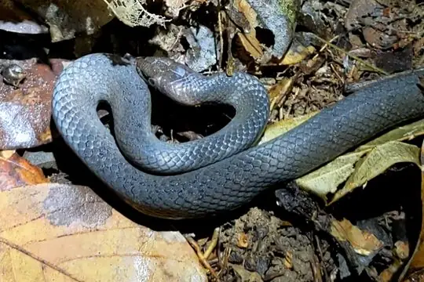
Günther's Black SnakeBothrolycus ater Günther's Green Tree SnakeDipsadoboa unicolor
Günther's Green Tree SnakeDipsadoboa unicolor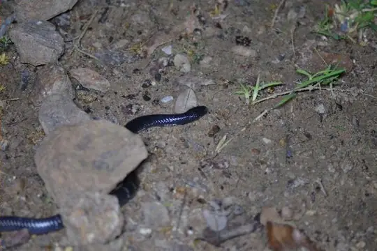
Günther’s Garter SnakeElapsoidea guentherii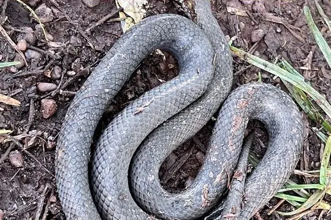
Hallowell's House SnakeBoaedon virgatus- No photo yetHaut-Oubangui Beaked SnakeLetheobia rufescens
- No photo yetHellmich's Wolf SnakeLycophidion hellmichi
 Hughes' Green SnakePhilothamnus hughesi
Hughes' Green SnakePhilothamnus hughesi Irregular Green SnakePhilothamnus irregularis
Irregular Green SnakePhilothamnus irregularis Jackson's Black Tree SnakeThrasops jacksonii
Jackson's Black Tree SnakeThrasops jacksonii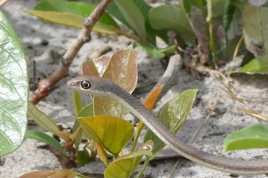
Jalla's Sand SnakePsammophis jallae Jameson's MambaDendroaspis jamesoni
Jameson's MambaDendroaspis jamesoni- No photo yetKatanga Beaked SnakeLetheobia kibarae
- No photo yetKatanga Mountain Bush ViperAtheris katangensis
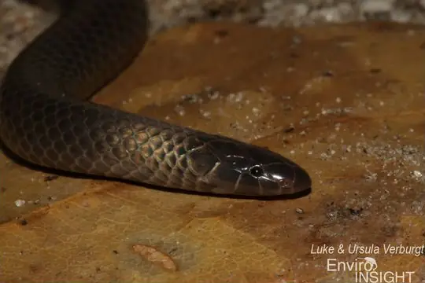
Katanga Purple-glossed SnakeAmblyodipsas katangensis Kirtland's Twig SnakeThelotornis kirtlandii
Kirtland's Twig SnakeThelotornis kirtlandii Large-eyed Green TreesnakeRhamnophis aethiopissa
Large-eyed Green TreesnakeRhamnophis aethiopissa- No photo yetLaurent's File SnakeMehelya laurenti
 Laurent’s Green Tree-snakeDipsadoboa viridis
Laurent’s Green Tree-snakeDipsadoboa viridis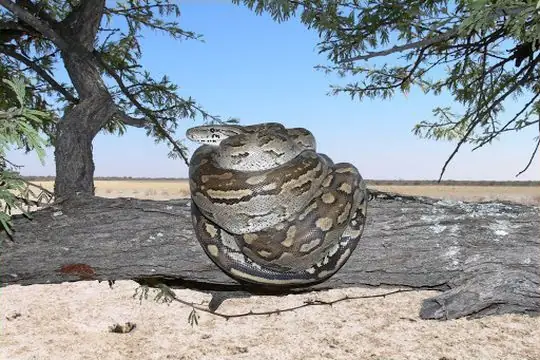
Lesser African PythonPython natalensis Lined Olympic SnakePsammophis lineatus
Lined Olympic SnakePsammophis lineatus- No photo yetLined Water SnakeLycodonomorphus subtaeniatus
 Lineolate Blind SnakeAfrotyphlops lineolatus
Lineolate Blind SnakeAfrotyphlops lineolatus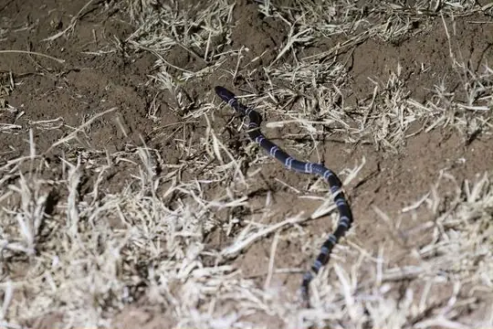
Loveridge's Garter SnakeElapsoidea loveridgei- No photo yetLéopoldville Beaked SnakeLetheobia praeocularis
- No photo yetMany-banded SnakeNaja multifasciata
 Marsh Snake (fuliginoides)Natriciteres fuliginoides
Marsh Snake (fuliginoides)Natriciteres fuliginoides- No photo yetMayombe Bush-ViperAtheris anisolepis
- No photo yetMichell's Quill-snouted SnakeXenocalamus michelli
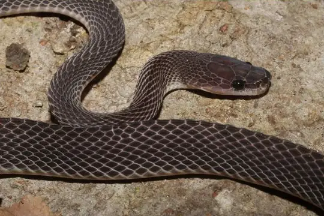
Mocquard's African Ground SnakeGonionotophis brussauxi Mole Viper (aterrima)Atractaspis aterrima
Mole Viper (aterrima)Atractaspis aterrima Mole Viper (corpulenta)Atractaspis corpulenta
Mole Viper (corpulenta)Atractaspis corpulenta Mole Viper (reticulata)Atractaspis reticulata
Mole Viper (reticulata)Atractaspis reticulata- No photo yetMongo Hairy Bush ViperAtheris mongoensis
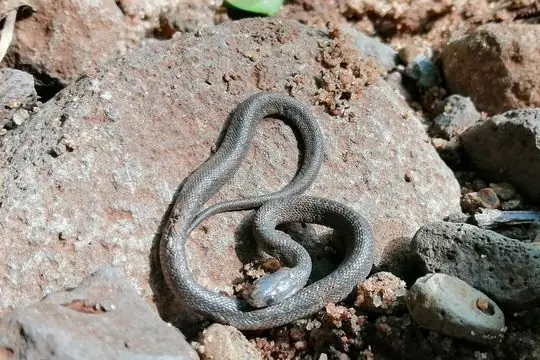
Montane Egg-eaterDasypeltis atra Mopane SnakeHemirhagerrhis nototaenia
Mopane SnakeHemirhagerrhis nototaenia- No photo yetMulanje Water SnakeLycodonomorphus leleupi
 Olive Grass RacerPsammophis phillipsii
Olive Grass RacerPsammophis phillipsii Olive House Snake (olivaceus)Boaedon olivaceus
Olive House Snake (olivaceus)Boaedon olivaceus Olive Marsh SnakeNatriciteres olivacea
Olive Marsh SnakeNatriciteres olivacea Olive Whip SnakePsammophis mossambicus
Olive Whip SnakePsammophis mossambicus Ornate African Water SnakeGrayia ornata
Ornate African Water SnakeGrayia ornata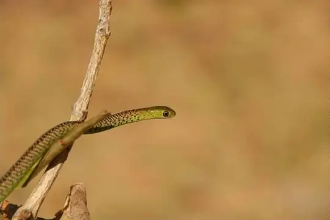
Ornate Green SnakePhilothamnus ornatus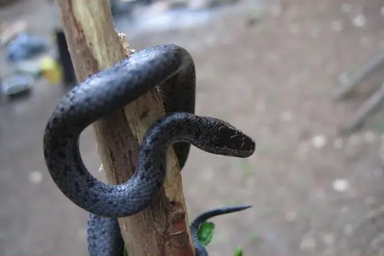
Ornate Wolf SnakeLycophidion ornatum Pale Wolf SnakeLycophidion irroratum
Pale Wolf SnakeLycophidion irroratum Pale-headed Forest SnakeBuhoma depressiceps
Pale-headed Forest SnakeBuhoma depressiceps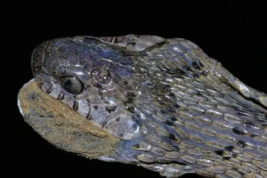
Palm Egg EaterDasypeltis palmarum- No photo yetParker's Banded SnakeChamaelycus parkeri
 Peri-Forest House SnakeBoaedon perisilvestris
Peri-Forest House SnakeBoaedon perisilvestris Plumbeous Centipede EaterAparallactus lunulatus
Plumbeous Centipede EaterAparallactus lunulatus Puff AdderBitis arietans
Puff AdderBitis arietans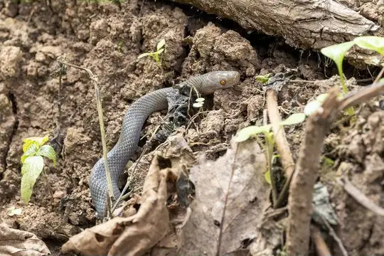
Radford's House SnakeBoaedon radfordi Red-Black Striped SnakeBothrophthalmus lineatus
Red-Black Striped SnakeBothrophthalmus lineatus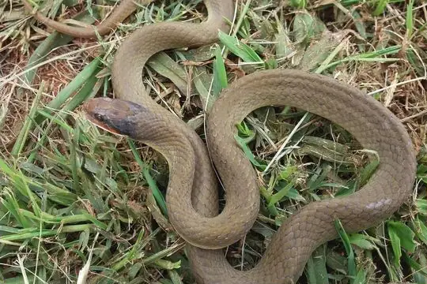
Red-lipped SnakeCrotaphopeltis hotamboeia Rhinoceros Viper (nasicornis)Bitis nasicornis
Rhinoceros Viper (nasicornis)Bitis nasicornis Ringed Water CobraNaja annulata
Ringed Water CobraNaja annulata- No photo yetRodhain's Purple-glossed SnakeAmblyodipsas rodhaini
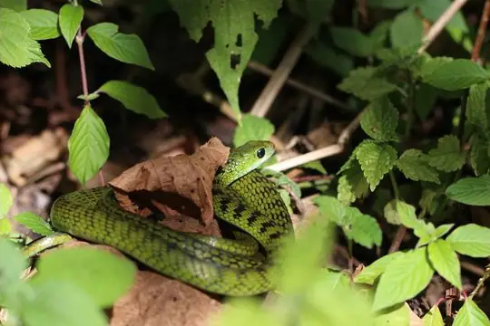
Rwanda Forest Green SnakePhilothamnus ruandae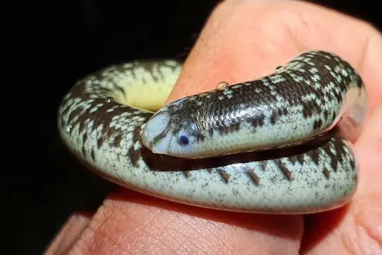
Schlegel's Giant Blind SnakeAfrotyphlops schlegelii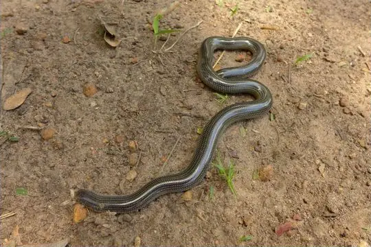
Schmidt's blind-snakeAfrotyphlops schmidti- No photo yetSchouteden's Sun SnakeHelophis schoutedeni
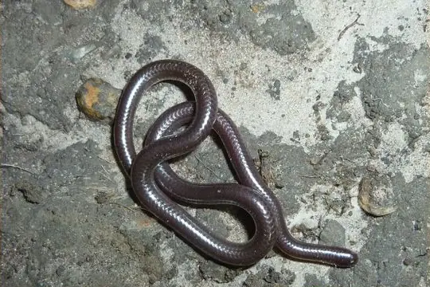
Shaba Thread SnakeLeptotyphlops kafubi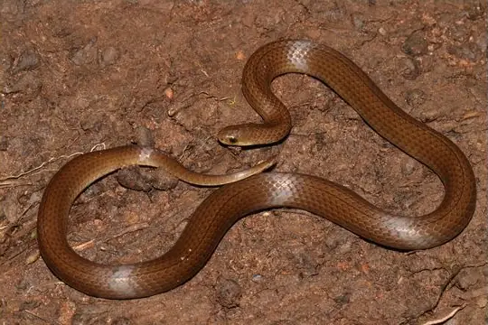
Shire Slug EaterDuberria shirana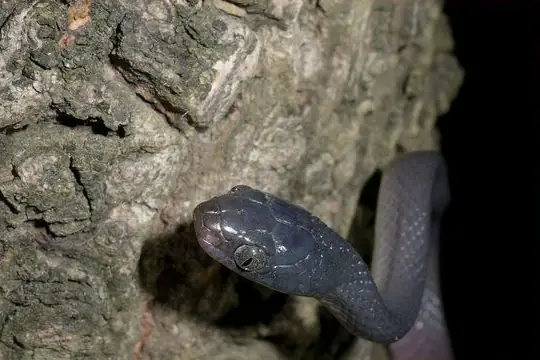
Shreve's Tree SnakeDipsadoboa shrevei Slender Green SnakePhilothamnus heterolepidotus
Slender Green SnakePhilothamnus heterolepidotus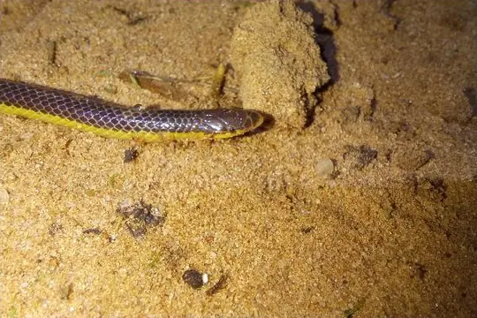
Slender Quill-snouted SnakeXenocalamus bicolor Small-eyed File SnakeMehelya stenophthalmus
Small-eyed File SnakeMehelya stenophthalmus Smith's African Water SnakeGrayia smithii
Smith's African Water SnakeGrayia smithii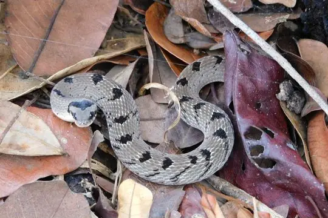
Snouted Night AdderCausus defilippii Southern Sahel Speckled Shovel-snoutProsymna greigerti
Southern Sahel Speckled Shovel-snoutProsymna greigerti- No photo yetSouthwestern Forest Marsh SnakeNatriciteres bipostocularis
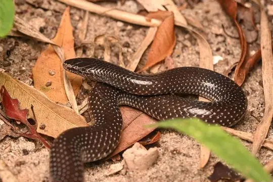
Speckled Wolf SnakeLycophidion meleagre Spotted Blind SnakeAfrotyphlops punctatus
Spotted Blind SnakeAfrotyphlops punctatus Spotted Bush SnakePhilothamnus semivariegatus
Spotted Bush SnakePhilothamnus semivariegatus Spotted Dagger-tooth Tree SnakeRhamnophis batesii
Spotted Dagger-tooth Tree SnakeRhamnophis batesii Spotted Night AdderCausus maculatus
Spotted Night AdderCausus maculatus- No photo yetSteinhaus' Worm SnakeAfrotyphlops steinhausi
- No photo yetStejneger's Beaked SnakeLetheobia stejnegeri
- No photo yetSternfeld's Beaked SnakeLetheobia graueri
 Stripe-bellied Sand SnakePsammophis subtaeniatus
Stripe-bellied Sand SnakePsammophis subtaeniatus Striped House SnakeBoaedon lineatus
Striped House SnakeBoaedon lineatus Striped Sand SnakePsammophis sibilans
Striped Sand SnakePsammophis sibilans- Striped SkaapstekerPsammophylax tritaeniatus
- Striped Wood SnakePhilothamnus dorsalis
- No photo yetSudan Beaked SnakeLetheobia sudanensis
- Tanganyika Water SnakeLycodonomorphus bicolor
 Thirteen-scaled Green SnakePhilothamnus carinatus
Thirteen-scaled Green SnakePhilothamnus carinatus Tholloni's African Water SnakeGrayia tholloni
Tholloni's African Water SnakeGrayia tholloni- Tiger Cat SnakeTelescopus semiannulatus
- No photo yetTogo SkaapstekerKladirostratus togoensis
- Twig SnakeThelotornis capensis
- Two-lined Night AdderCausus bilineatus
 Uganda House SnakeHormonotus modestus
Uganda House SnakeHormonotus modestus- Unicolor File SnakeLimaformosa chanleri
- Urungu Beaked SnakeLetheobia gracilis
- No photo yetUvira Worm SnakeLeptotyphlops latirostris
 Variable Burrowing AspAtractaspis irregularis
Variable Burrowing AspAtractaspis irregularis Variable Marsh Snake (variegata)Natriciteres variegata
Variable Marsh Snake (variegata)Natriciteres variegata Weiler's Tree SnakeDipsadoboa weileri
Weiler's Tree SnakeDipsadoboa weileri Werner's Garter SnakeElapsoidea laticincta
Werner's Garter SnakeElapsoidea laticincta Western Beaked SnakeRhamphiophis oxyrhynchus
Western Beaked SnakeRhamphiophis oxyrhynchus Western Crowned SnakeMeizodon coronatus
Western Crowned SnakeMeizodon coronatus Western Forest Centipede-eaterAparallactus modestus
Western Forest Centipede-eaterAparallactus modestus Western Green SnakePhilothamnus angolensis
Western Green SnakePhilothamnus angolensis- Western Jackson’s Wolf SnakeLycophidion jacksoni
- No photo yetWitte's Beaked SnakeLetheobia wittei
 Yabassi Tree SnakeDipsadoboa duchesnii
Yabassi Tree SnakeDipsadoboa duchesnii- Yellow-throated Bold-eyed Tree SnakeThrasops flavigularis
- No photo yetZaire Centipede-eaterAparallactus moeruensis
 Zaire Snake-eaterPolemon robustus
Zaire Snake-eaterPolemon robustus- Zambian Whip SnakePsammophis zambiensis
 Boaedon mendesi
Boaedon mendesi- No photo yetLetheobia acutirostrata
- No photo yetThrasops aethiopissa
- No photo yetTricheilostoma kongoensis
No snakes in Democratic Republic of the Congo match.
Democratic Republic of the Congo’s snakes in numbers
- Families: Colubridae 54, Lamprophiidae 38, Atractaspididae 30, Typhlopidae 18, Elapidae 15, Viperidae 15, Psammophiidae 14, Leptotyphlopidae 5, Pseudoxyrhophiidae 3, Pythonidae 3, Prosymnidae 2, Boidae 1.
- 15 are recorded in no other country in SnakeList: Battersby's Mole Viper, Christy's Banded Snake, Christy's Water Cobra, Dwarf Water Cobra, Eastern Congo White-bellied Water-Snake, Katanga Beaked Snake, Laurent's File Snake, Michell's Quill-snouted Snake, Mongo Hairy Bush Viper, Rodhain's Purple-glossed Snake, Schouteden's Sun Snake, Stejneger's Beaked Snake and 3 more.